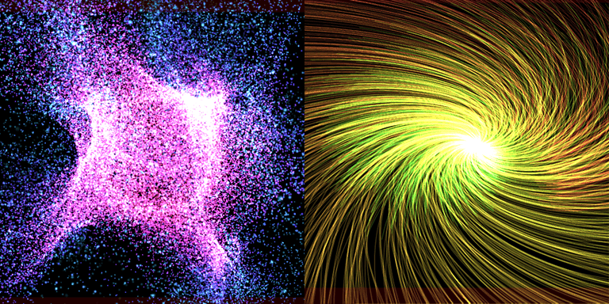

GPU粒子
概述
对GPU粒子进行相关设置。 启用该功能的节点将作为发射器运行，生成GPU粒子。
普通粒子由CPU进行计算，而GPU粒子则由GPU计算。 因此可以高效处理大量粒子。

GPU粒子仅可在现代图形API中使用。
| 目标平台 | 支持情况 | 备注 |
|---|---|---|
| DirectX 9 | ❌ | |
| DirectX 11 | ✅ | 需 Shader Model 5.0 及以上 |
| DirectX 12 | ✅ | |
| OpenGL | ❌ | |
| Vulkan | ✅ | |
| Metal | ✅ | |
| WebGL | ❌ |
| 目标引擎 | 支持情况 | 备注 |
|---|---|---|
| Unity | ❌ | 计划后续支持 |
| Unreal Engine | ❌ | 计划后续支持 |
| Godot Engine | ❌ | 计划后续支持 |
参数
由于GPU粒子在GPU上计算，可用功能相比普通粒子会受到一定限制。
启用
启用GPU粒子功能。
基础设置
用于设置GPU粒子生成相关基础参数。
启动GPU粒子后，系统会根据 生成总数 × 生命周期 从粒子缓冲区中分配对应内存空间。
生成总数
粒子的最大生成总数。 达到该数值后将停止生成粒子。
勾选正无穷后，粒子将持续无限生成。
当父粒子被销毁或收到外部停止指令时，生成会停止。
每帧生成数量
每帧生成的粒子数量。 数值越大，粒子生成密度越高。
生成开始时间
粒子开始发射前的等待时间。
生命周期
单个粒子的存活时间。 该值也会影响各类参数的变化速度。
生成形状
设置粒子的发射源形状。 实际形状会受父粒子变换（位置、旋转、缩放）影响。
生成形状
设置发射源的形状类型。
支持：点、线、圆、球 和 模型。
| 点 | 线 | 圆 | 球 | 模型 |
|---|---|---|---|---|
点的参数
点无额外参数。
线的参数
粒子从 起点位置 与 终点位置 连接的线段上生成。
增大 线条粗细 可实现类似圆锥的扩散效果。
圆的参数
粒子根据 轴方向 确定轴线，在圆周上生成。
半径由 内半径 与 外半径 决定。
球的参数
粒子在由半径确定的球面上生成。
模型的参数
指定使用的模型路径后，粒子将从该模型的网格表面生成。
可按需设置尺寸。
速度
设置粒子的位置与运动相关参数。
粒子位置除受此处设置影响外，还会受力的作用。
方向
粒子生成时的初始运动方向向量。
扩散范围
粒子生成时相对于运动方向的随机扩散角度。 取值范围 0～180 度：0 度无随机扩散，90 度呈半球扩散，180 度全方向扩散。
初始速度
粒子生成时的初始速度。 可设置随机范围。
阻尼
粒子运动过程中的速度衰减系数。 数值越大，粒子运动减速越快。 可设置随机范围。
旋转
设置粒子朝向与旋转相关参数。
实际显示效果会受渲染形状的告示牌设置影响。
固定模式主要使用 XYZ 参数，Z轴旋转告示牌模式主要使用 Z 参数。
初始角度
粒子生成时的初始角度（欧拉角）。 可设置随机范围。
角速度
随时间变化的旋转速度（欧拉角）。 可设置随机范围。
缩放
设置粒子大小。 行为随所选模式变化：
固定缩放模式：大小固定为设置值。缓动模式：在生命周期内从起始值平滑过渡到结束值。
单一缩放比率
不区分轴向的固定缩放值。 可设置随机范围。
XYZ缩放比率
分别对 X、Y、Z 轴设置固定缩放。 可设置随机范围。
开始与结束值（单一）
不区分轴向的缓动缩放开始与结束值。 可设置随机范围。
开始与结束值（XYZ）
分别对 X、Y、Z 轴设置缓动缩放开始与结束值。 可设置随机范围。
力
设置对粒子施加外部作用力的参数。
| 重力 | 龙卷风 | 湍流 |
|---|---|---|
重力
向指定方向施加加速度。 不限于向下，也可向上、向侧面施加。 该方向不受父粒子朝向影响。
龙卷风
以指定中心点与旋转轴为基准，对粒子施加旋转力。
可通过调整旋转力与吸引力控制龙卷风效果的强度。
湍流
通过由随机种子、粒度、复杂度生成的向量场，为粒子添加噪声运动。
可通过调整力控制湍流效果强度。
渲染
渲染通用设置。
混合
设置渲染时的混合方式。
深度写入
启用后将写入深度缓冲。
深度测试
启用后将进行深度测试。
渲染形状
设置粒子渲染使用的形状。
形状
可从以下 3 种中选择：
| 形状 | 说明 |
|---|---|
| 精灵 | 渲染简单的四边形面片 |
| 模型 | 渲染任意自定义模型 |
| 轨迹 | 绘制粒子运动轨迹连线 |
告示牌
指定精灵相对于粒子的朝向。
| 告示牌 | 说明 |
|---|---|
| Z轴旋转告示牌 | 精灵面向相机，并沿 Z 轴旋转 |
| 移动方向告示牌 | 精灵面向相机，Y+ 轴朝向运动方向 |
| 固定Y轴 | 精灵保持 Y 轴固定并面向相机 |
| 固定 | 精灵朝向跟随粒子自身旋转 |
模型文件
指定渲染使用的自定义模型。
轨迹长度
设置轨迹长度。 数值越大轨迹越长，但轨迹缓冲占用内存也会增加。
大小
设置渲染形状的基准尺寸。
该值会与缩放参数相乘。
若形状为轨迹，则影响轨迹宽度。
颜色
设置粒子颜色相关参数。
颜色继承
启用后粒子颜色会受父粒子颜色影响。
整体颜色
设置粒子颜色。
| 类型 | 说明 |
|---|---|
| 固定 | 设置不变的固定颜色 |
| 随机 | 设置两种颜色，粒子生成时随机选取 |
| 缓动 | 设置起始与结束颜色，在粒子生命周期内渐变 |
| F曲线 | 通过F曲线控制颜色变化 |
| 渐变 | 通过渐变控制颜色变化 |
发光系数
粒子亮度系数。
该值与整体颜色的 RGB 分量相乘。
淡入
粒子生成时淡入显示。
淡出
粒子消失时淡出显示。
渲染材质
设置粒子渲染使用的材质。
材质
| 材质 | 说明 |
|---|---|
| 不被照亮 | 直接显示粒子颜色，不受光照影响 |
| 光照 | 受光源影响，产生明暗阴影 |
颜色纹理
渲染使用的颜色贴图。
法线纹理
仅材质类型为光照时可设置。
渲染使用的法线贴图。